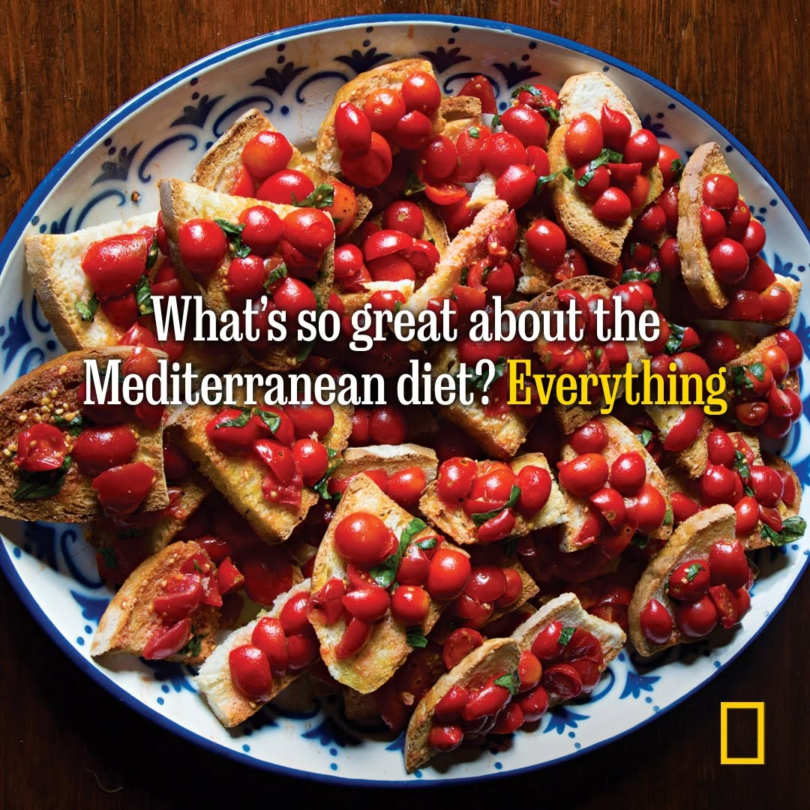

Mediterranean diet
(See comments for link that bypasses the paywall.)
Louis shares a National Geographic post saying the Mediterranean diet, built on whole grains, fruits, vegetables and lean proteins, is associated with lower chronic disease risk and longer life. It adds no specific data beyond a link.
Mediterranean diet
(See comments for link that bypasses the paywall.)
There's a reason why the Mediterranean diet is so popular—it works.
Packed with nutritious foods like whole grains, fruits, vegetables, and lean proteins, this diet has long been associated with a lower risk of chronic diseases. But why does it work so well? And how can it help you live a longer, healthier life?
Find out more about the Mediterranean diet and its associated health benefits at: The Mediterranean diet has stood the test of time for a reason: It works (Premium)


Gokhan shares two practical swaps for sticking to a Mediterranean diet: low-saturated-fat almond fruit bars and no-salt sprouted bread, which he says lowers his blood pressure. He links earlier group posts on plaque reversal, salt restriction and anti-inflammatory foods, and reshares a do's-and-don'ts guide to the diet.
Louis explains the DISCO-CT randomized trial, where a DASH diet plus statins produced the largest soft (non-calcified) plaque regression of any dietary trial on CT angiography. Adjusted to one year it was -39.5 mm3, versus an average at-risk person growing about 5 mm3 per year, so roughly 8 years of progression reversed. He notes the DASH diet was about 30% fat, mostly unsaturated, and adds caveats about interpretation.
In the DISCO-CT randomized trial, a DASH-style diet with statins reduced non-calcified plaque volume by 39.5 mm3 (adjusted to one year from 66 weeks), the largest dietary regression on CT angiography to date. An at-risk person typically grows about 5 mm3 per year, so this equals roughly 8 years of progression. DASH fat was ~30% of calories, mostly unsaturated.
Louis summarizes DISCO-CT, where a DASH diet with statins gave the largest dietary soft plaque regression on CT angiography, equal to about 8 years of normal progression.

A hashtag-only share of a CNN report on a study finding whole grains, vegetables and fruit protect cognition even when begun later in life.
Louis describes the DISCO-CT randomized trial, where a DASH-style diet with statins produced the largest soft plaque regression (NCPV) on CT angiography of any diet trial, -39.5 mm3 adjusted to one year. He puts this against about 5 mm3/year typical progression, with the caveat that this is relative to a typical American, not the patients' own history.